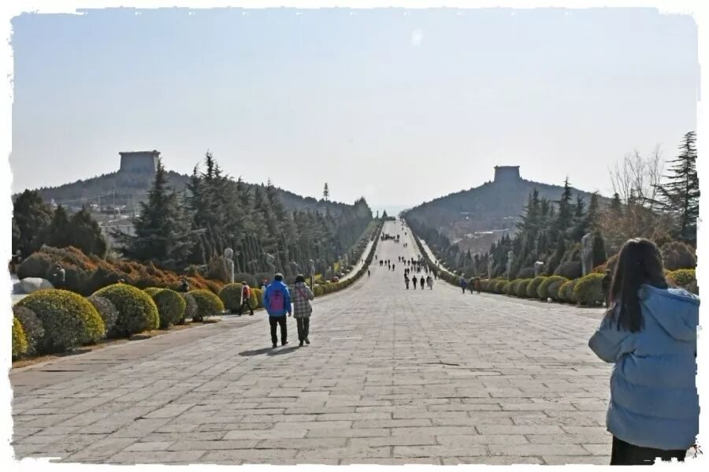
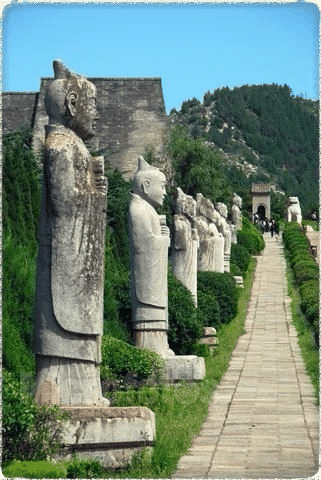
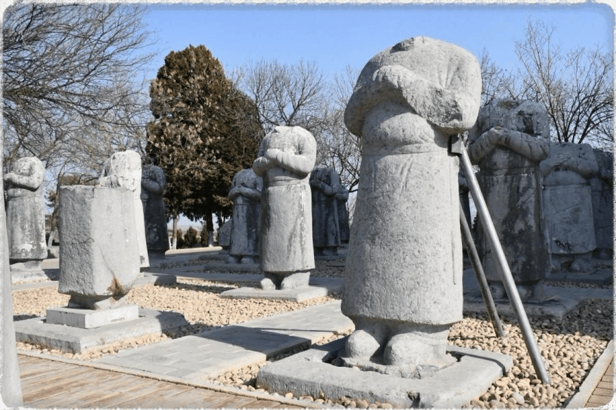
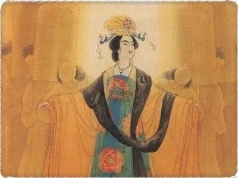
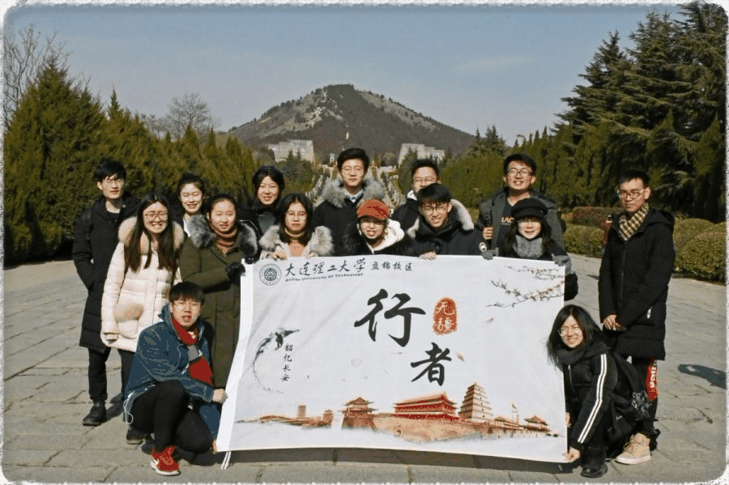

【行者无疆 · 韶忆长安】 两帝一陵一世界，三山一景一美人
“行者无疆 韶忆长安"行程最终篇
关中地区沃野千里、民风淳朴、气候温暖湿润而成为历代帝王建功立业之地。史上有13个王朝定都于陕西，七十二位帝王葬于悠悠八百里秦川。
1000多年前，武则天，一个统治中国50年的女人和她的丈夫唐高宗李治，被埋葬在距西安80公里的梁山上。一对夫妇，两朝皇帝，合葬一室，且在千年时间里原封未动，这在中国历代帝陵中都极为特殊。

乾陵“以山为陵”，依梁山而建，坐北朝南，气势宏伟壮观。远远望去，梁山北峰好像女皇武则天的“头”；南二峰突兀而起，东西对峙，挺拔奇秀，唤作双乳峰；近处公路两侧相对的两个小山包，则似她的“双脚”。蓝天白云下的乾陵犹如一位曼妙婀娜的美人，在和煦的阳光下仰天而卧，细细地品味着千年的风雨沧桑。


步入园区，一条宽阔神道映入眼帘，依着山势缓缓抬升，笔直地向北延伸与巍峨耸立的梁山融为一体。神道两侧戴冠持剑的的石像，自南向北依次而列，个个表情凝静，衣着端庄，颌首而立，守护着陵墓。

一代文豪郭沫若书写了碑文—“唐高宗与则天皇帝合葬之墓”。碑文为武则天做了历史正名，也使其终以帝王之名长眠于此。
沿着神道一路北上便来到了千年之谜的“无字碑”。它是用一块完整的巨石雕凿而成，重达百吨，给人以凝重厚实，浑然一体的美感。关于无字碑为何无字说法不一，不过其中最广为流传的是武则天想用无字的空白，留给后人一份神秘的答卷，让历史去填写自己的功过是非。

历史上对她也确实是褒贬不一、颇具争议。一方面她任用酷吏，滥杀无辜，使不少文臣武将遭受不白之冤，晚年更是好大喜功，生活奢靡。即使对有一定亲属关系的李唐皇氏也可以说冷酷无情。

然而瑕不掩瑜。作为古之大忌的“女人执政”，武则天之所以没有引起民怨，反倒颂其功绩，且在“汉唐盛世”的执政者中占有一定地位，都与她的政绩密不可分。她组织编写《臣轨》约束臣子规矩、打击保守的门阀贵族、维护边疆稳定，收复失地、推动科举改制，实行殿试，另外她本人善于写诗作文，带动了文坛上的一时活跃。集万千成就于一身，堪称中国历史乃至世界史上的女中豪杰。毫不夸张的说，正是她的励精图治才前承贞观后启开元，引领大唐帝国走向辉煌。
千古多少事，都付笑谈中，吾之功过，留待历史评说！
立于乾陵之上，感悟着大唐雄风，折服于一代女皇的雄才胆略。

随着一声驶离乾陵的大巴车轮声，行者们的西安调研之路暂时告一段落。赏不够的一路风景，品不完的多样文化，说不尽的万千思绪，此时均汇聚成一份不舍与留恋，而后却又释然，因行者没有停下探索的脚步，我们的人生之旅也仍在继续。
不负相遇，且行无疆！

图片丨丛雨晴 王一岚
文字丨郭新明
责编丨邓子孚
审核丨邓子孚 潘雯雯
行者无疆实践团
QQ：2758025831

随行者一起认识世界
长按二维码关注